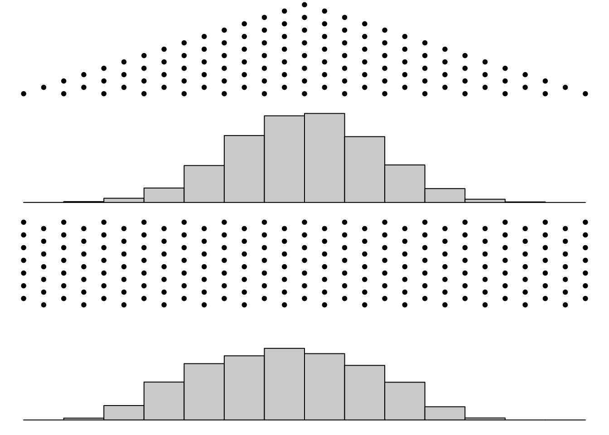
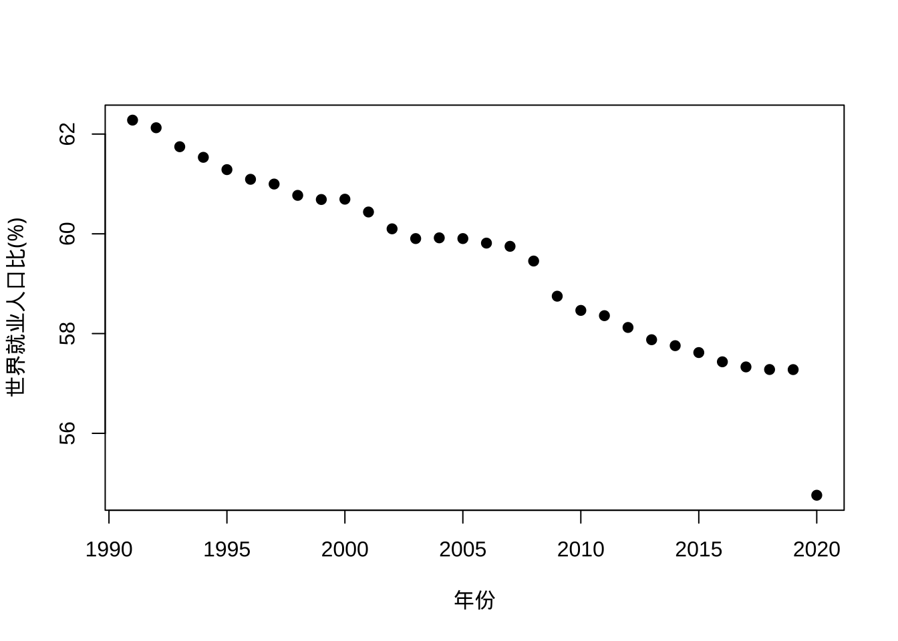
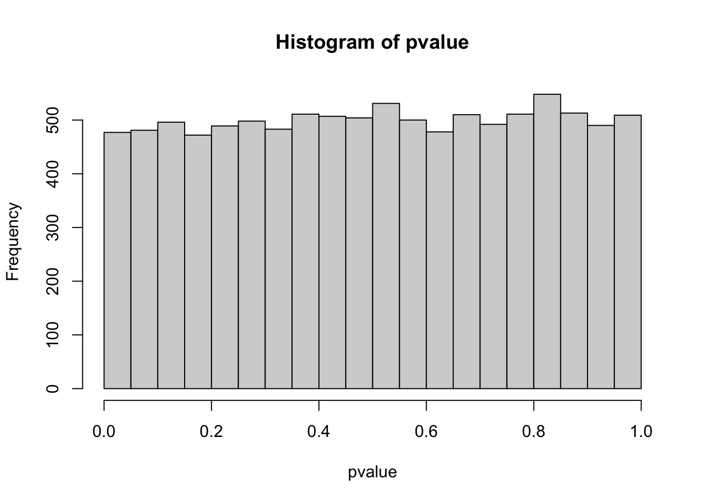
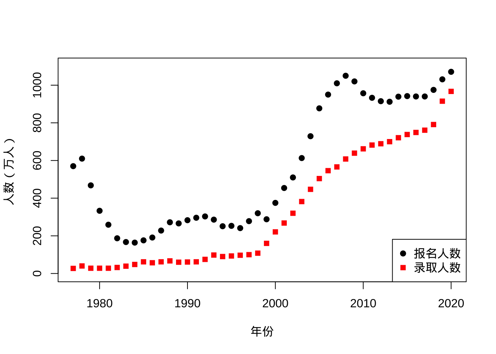
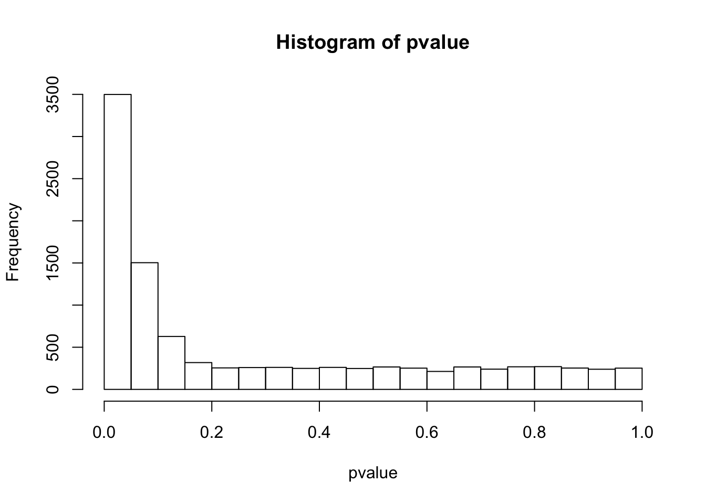

坑 3 科研现状概览
了解科研现状要先了解现代社会及其形成过程，明白科研是现代社会的一部分，要优先解决现实存在的问题，也要学会从整体经济指标上观察现代社会结构并对科研这个行业进行定位。具体到当前，科研的基础研究生教育目前存在一些时代困境，读研会遇到扩招后的学历贬值、毕业延期问题，毕业后进行科研会遇到职业发展的爬金字塔过程及转行问题。而科研本身也遇到了可重复性危机等问题与趋势，下面就具体来讨论。
3.1 现代社会
现代科研隶属于现代政治经济系统，满足社会的需求是其存在的基础，至于是否满足个人兴趣爱好与远大理想，可认为是副产品。当然，这是从社会层面说，具体到个人千差万别。
3.1.1 现代社会的形成
首先，我们要了解现代社会运行的基本模式，其中陌生人分工协作是现代社会最突出的特色。社会，简单说就是一群人而不是一个人生存的行为与知识模式集合。
相比宗族或家庭为单位的原始聚居，古代与近代社会的发展不断突破着人们行为与知识范围的地理与血缘限制。在原始聚居条件下，人们终生活动范围有限，语言隔阂等也限制了信息交流，好的生存模式或经验很难传递到下一代或更远的地方，短暂的寿命基本都用在维持生存繁衍上了。当然，对原始部落的研究发现生活在其中的人并不比焦虑的现代人的快乐感受更少，但生活的自由度其实很有限（从另一方面讲，如果完全意识不到当今生活自由度可以改变其实也是一种内在幸福感，拥有更大自由度的人并不能完全体会到）。这种狩猎采集的原始聚居其实并不太需要共同的社会行为规则，但后来人们驯化了农作物与牲畜（其实很难讲谁驯化了谁，作物与牲畜也可能通过被驯化更好地传播了基因），进而从流动走向了定居。
定居后的社会出现了更细致的分工，例如一个村落需要祭祀、防卫、生产、医疗等部门维持生存结构，这种分工有着自己的生命力，一旦产生会让整体受益，同时也会让这种结构加强。同样的，这种分工模式并不惟一，但如果两个定居的社会共同体产生利益矛盾，最后剩下来的总是一种更有利群体生存的模式。这个模式下的行为规则形成了社会道德的起源。这同时也是一个路径依赖的过程，总会带有一些副产品例如民俗，很多时候我们就是通过副产品来回溯过去。如同对进化过程的研究一致，使用幸存者就是最好的或最合理的逻辑是不恰当的，我们需要通过回溯来发现一些制度历史上的合理性与偶然性，逻辑自洽并不代表历史真相，这点对科研认识也是很重要的。然而，这个阶段的社会政治经济体制依然很大程度被自然条件所控制，多数规则要么偏向农业社会，要么偏向商业经济。人类的视野逐渐开阔，但基于血缘与地域的多样化依然可以保留，直到更追求效率的技术与体制规则进一步交互作用，孕育出近代工业社会。
近代工业社会将分工与效率推向了极致，影响的范围从多个国家推广到了全球。伴随而来的就是一套基于陌生人交流法则的法制社会而不再依赖熟人社会里宗法或潜规则。交通技术例如航海、汽车、火车的进步打破了先进知识的区域内传播，所有国家都会倾向于遵循同样的工业标准，知识传播语言也尽可能一致例如使用阿拉伯数字计数或标准计量单位，法律也会去遵循共通的法则来处理陌生人间的关系。科学研究在这个过程中起了很重要的作用，而工业化也不断向科研提出需求，此时科学研究从精英们的兴趣爱好变成了巨大的财富来源，每一次技术革新都服务了社会，而几乎所有的社会经济体都会拿出资金支持科研。务实一点的国家或企业会对工程学优先发展，而对自然科学的支持则颇有情怀意味，毕竟一旦经济下滑，最先拿不到钱的都是基础科研等见效慢的学科。这种社会整体的功利主义自产生之时就展示了巨大的生命力，甚至不断影响了社会中个体的决策行为。
现代社会基本是延续了近代工业社会对分工与效率的追求且交流限制进一步被信息技术打破。现代社会的进步往往是构建在前人开拓领域之上的而不是像近代社会那样开拓全新的领域，特别在技术领域，新技术往往是很多现有技术的叠加或组合。对分工的追求导致工业品的生产与消费不再由一个人完成，人越来越嵌入到社会机器运转的齿轮之中，不用关心所需之物如何产生而更多关注其功用，而很多技术的使用者并不清楚原理，此时技术黑箱与魔法差异不大。而新产生的职业带有明显的目的性，例如心理咨询师就是要解决心理问题、营养师就是要给出最好的营养搭配、财务顾问就是能给个稳定的投资回报率、经济学家就是要能预警经济危机、科学家就是要能把核聚变搞成可控的等。不过，很多新产生的职业虽然事实上发展出了自己的术语或黑话体系，但并不能真的解决问题而仅仅是用专业感给现代人确定性与安全感，毕竟作为个体的现代人遇到自己知识外的问题除了寻求专家并信任专家外似乎也没有了探索其他知识领域的勇气。
这种分工导致的个体角色工具化或目的化经常给现代人带来困惑，现代人会很难理解科学结论里的概率而很快把概率转化为有用或没用这样的定性判断，例如传染病出现后现代分工制度会很快给出疫苗，但如果打了疫苗依然被感染就会被舆论放大，只是事实上疫苗的有效率从来都到不了100%，现代人的世界观是决定论的而科学需要概率化的世界观。现代人会认为总存在专业人士来解决发生的问题，但事实上很多现在发生的问题历史上虽有类似，但需要因地制宜解决。我们的现代教育系统并不能及时提供解决新问题的人才而更多是传授有客观标准评判的知识，创新、灵感还有教材外自由发挥的内容很难培养与评价，但这些对解决问题很重要。
现代社会已经不存在真正意义上的通才了，甚至历史上的所谓通才知道的内容也不比现在完成义务教育的人多多少。唯一比较接近这个概念的是学者，不过学者现在如果不挂个专家头衔也很难发声。职业人士与专家看似一致但内核不同。职业人士追求的是标准化可持续的行业利益，专家则是从知识量来判断。职业化行业可以为了内部利益向大众营销价值观与品牌感，但专家更多是就事论事，远离利益讨论。很多现代人尽力维护的专家形象其实是为了维护自己的职业化饭碗别被时代甩开，但目光长远的专家学者则时刻准备迎接新时代。
分工对人的异化或者工具化既促进了现代社会经济发展效率，也制造了大量的现代社会特有的问题。现代社会对效率的追求主要是为了迎合工业革命以来的增长现象。现代社会犹如一台机器，能源供应以化石燃料为主，在几百年的时间里把植物上亿年从大气中固定的碳重新释放回大气。伴随技术进步，能源的供应似乎是有其他解决方案的，例如可再生能源与核能。在解决动力问题后，机器生产出的产品还需要被消费掉，支持消费需求的则同样是过去几百年，甚至更具体说就是二战以来才出现的人口大爆炸，近似指数增长的人口带来了巨大的需求与创造新需求的空间。不过，目前几乎可以确定伴随经济发展，全球人口增长的趋势将在几十年内终结，很多发达国家如果排除掉来自生育率较高的发展中国家新移民，人口事实上也早就停止增长了。或许现代社会会不断给现代人新的需求增长点，但人数只要不涨了，人口总需求端疲软的现象是一定会发生的，这会直接终结掉现代社会的增长逻辑。不过全局性衰退可能并不影响局部繁荣，当前人口虽然下降但依然向大都市圈集中，局部增长的代价是更大范围的衰退。
追求增长的发展逻辑其实自发破坏掉了很多农业社会以来形成的宗教世界观。现代人的伦理道德大都起源于农业社会甚至更早的狩猎采集社会，很多世界观跟增长是内在矛盾的，例如前现代社会的民俗宗教喜欢用轮回的概念，但轮回是需要收支平衡的，在信息交流效率低下的时代你可以说轮回到别处了也没法考证，但现在世界人口就摆那里了，农业出现前世界人口1500万左右，农业社会出现后到第一次工业革命中的1804年，世界人口才到达10亿。之后的两百多年里，这个数字变成了70亿。但并不是说1900年到40亿，事实上这个时间是1974年，甚至到达30亿都是1959年的事。这个快速增长时期的人口需要的前世从哪里来？清末四亿人口死了都别转去凑中国现在人口都得累积上几代人，阎王爷必须要掌握未来几百上千的人口变化才能在此时此刻凑够轮回总数，孟婆汤也得增加防腐剂来应对每天人数的波动。也许有人又要搬出六道轮回的理论补丁让人畜互相转生来凑数，但现代社会的绿色革命又不只是推动人口增长，畜牧业增长更是惊人，更不用说我们的生物制药行业为了提取某些不方面化学合成的物质而使用的工业级培养皿。物种虽然在经历大灭绝但数量上可一直都在增长，毕竟自从人掌握固氮技术以来人工固氮总量上已经超过了自然固氮，而有机氮是氨基酸的必要组成部分，因此现代社会里我们事实上“生产”出了自己形成了人口大爆炸。说白了轮回机制的提出者囿于时代根本预见不到一个增长主导的现代社会，后面无论怎么打补丁也会被统计事实打脸。
此外，为了解决对未知而恐惧而构建的算命系统也经不起现代社会的检验，毕竟八字算命一共就能容纳561600种人，当今世界人口70亿，平均来看，每个八字有一万多人，也就是说八字其实不够用了，重复率太高，天煞孤星都不孤独，当然这类理论也有些打补丁的理论但明显是后来人意识到问题了增加的解释。现在保留下来的宗教都有一定世俗化趋势，模糊规避掉这些脱离实际的东西。现代社会的新宗教表现形式则更多是品牌崇拜、时间旅行、外星人这一类起码不会直接被经验事实证伪的行为与理念，否则根本经不起推敲。现代社会的增长逻辑是一种进步，起码对旧时代的破坏是很彻底的。
今天，增长逻辑还深深植入到现代社会的经济运转之中了，金融行业发展推动了资本的全球流动。资本所到之处会在区域内投资建厂、提供工作岗位、提升基础设施并创造繁荣景象，但同时当资本发现无法获益时就会毫不犹豫流向下一个价值洼地。这个过程之前会被限制在国家之内推动全行业进步，但全球化信息化的现代社会之中，资本流动更多考虑的是低成本高收益，因此我们会看到很多国家特别是小国家的行业门类是不全的。他们嵌在全球供应链上去发展，而具体品类产品的生产总是会集中到利润最高的几个区域或国家里且通过不断扩大规模降低边际成本，这同样是资本驱动，经济学上叫做比较优势。资本永远是逐利的，但当全球所有行业或区域因为各种限制或风险无法产生足够的利润，资本将会自行退出历史舞台。不过，现代社会目前还没有提出一个增长逻辑之外的经济运行方式与科技发展模型，以美元为中心的世界货币价值流通体系目前也遭受了很多新技术与保守主义的冲击，现代社会需要给出解决方案。更深远的影响则是个体对增长逻辑的信仰，现代人普遍展示出了对新技术与美好未来的向往且过去几十年这个现象也是符合增长信仰的，但从科学视角看增长更多是一种现象而非规律，会因为时代背景的不同而出现变化。
现代社会中维持文化多样性与个体-社会相互关系的思考不断涌现，它塑造了个体认知，个体认知却反过来反思现代社会的诸多问题例如极端民族主义、保守主义还有宗教的崛起、环境保护、气候变化、社会隔离与歧视、机会公平、贫富差距、人口老龄化、战争暴力、谣言传播、经济危机、金融危机、人工智能等。这些问题的根源有相当比例是社会政治经济体制的构建过程出现了漏洞，而今的科技发展把一些问题放大了，或者说这个系统需要打补丁了。虽然在意识形态或经济发展模式上现代社会有些概念上的区分，但说到底都是去构建或选择一个让大多数人能接受的体制，然后能够去解决发展中出现的问题。如果问题足够严重，所有现代国家会搁置争议联合起来解决，毕竟本质上现代社会制度都是解决发展问题的。而发展中问题的出现自有其内在规律，不会主动迎合现有社会体制。
3.1.2 现代社会的结构
当前社会运行方式也可通过基本经济指标这个角度来进行整体解读。2020年中国人均国内生产总值达到了一万美元，也就是一年全国创造价值总和大概14万亿美元。全国有约不到8亿就业人口，另外有6亿多或老或小目前没法创造劳动价值，学龄前跟上学的、家庭主妇/夫还有吃退休金的老年人与无劳动能力的群体事实上还是靠家庭与政府补贴养的。在发达国家美国，也有大约超过一半的人口是不领工资不就业的（这个数据川普竞选总统时曾经用过，吃准了普通人算不清楚就业人口与总人口的差异，失业率其实只算满足就业条件人口与实际就业人口），毕竟美国年龄结构比中国更老龄化一些。同时，伴随老龄化与少子化，中国就业人口规模事实上在2017年已经见顶，未来就业人口比例会更低。
另外，人均国内生产总值一万美金跟人均收入一万美金也是两个概念，企业的支出成本比绝大多数人拿到手的薪资要多，要考虑物料磨损、税费等开支。虽然这个比例不太固定，但一般认为大概五到六成是人均收入，美国2019年人均国内生产总值大概6.5万美元而家庭人均收入则成了3.3万美元，中国人均年收入也就大概5000美元，这个人均的基数是总人口而不是就业人口，把儿童老人也给算进去了。因为就业人口恰好也是总人口的五六成，所以人均GDP其实歪打正着跟就业人均工资其实差不多。
在接近八亿就业人口中，其中四成是农业人口，中国目前的城市化其实也就搞了五六成，城乡收入差距大概三比一。因为存在收入差距，以后农业人口还得萎缩，会有越来越多的乡村消失流向收入较高的城市。中国就业人口从事的行业超过百万人规模的大概有三四百个，差不多对应上了所谓三百六十行，大头在制造业、建筑与教育。按产业划分农业解决了其中大概两亿，制造业也是大概两亿，第三产业解决了剩下的不到四亿人。所谓中国制造其实是约两亿就业人口在支撑的，且这个数也在逐年萎缩。同时，每年城镇新增就业人口大概一千多万，同时也有接近千万的人退休，这些就业数据如果有概念了后面的很多趋势推算就比较简单。互联网上活跃的人大多是学生跟有工资没成家的职场新人，对养家糊口缺少感知。事实上，支持经济的中青壮年其实在现代社会中起着创造经济价值且补贴其他年龄段的作用，如果就业人口低于五成这个现代国家的经济游戏就会玩不下去。科研对于现代社会需要解决的一个现实问题就是在人口不能支持经济可持续运转时用新技术来降低社会运作的成本。
现在我们看下城市数据，全国有两三百个地级市，县级单位有接近三千个，城市实体（不论县级还是地级）除了一线城市外，人口基本在几十万到几百万之间。对于地方经济，如果某一个行业解决了过万的就业岗位，其对地方政府财政收入的影响就大概率超过百分之五，显著影响地方经济发展与社会稳定。例如，任一地方政府的公务员与事业单位就业人数都可看作一个大行业，地方上单一企业就业人数如果过万，年产值基本都是大概不低于十亿人民币的规模，按中国的企业税，地方政府拿上亿不成问题，多的时候能解决地方公务员四五成的工资。说这些是想说明对于地方政府，几千上万的就业看起来少，实际特别诱人，同理在美国经常看到地方议会为了几千就业岗位吵得昏天黑地，实际原因就是背后都是真金白银利益相关。
此外我们看一下行业规模，年产值过万亿美元的细分行业是不存在的，因为全中国一年就14万亿美元的总盘子去让几百个行业大类去分，但确实有行业产业能过万亿人民币，说白了就是医药、地产与金融，但这些行业都有从业门槛，要么是资质、要么是资金、要么是专业术语体系，一般人不好进去，因此从业者也就能享受超过平均数的收入，不过从业人数规模也都是百万级的了。如果进一步细分就比较有意思了：
对于一个千亿规模市场，按照行业平均薪酬其从业规模大概在百万，如果其服务目标用户是几亿，那么每年要从用户手里拿几百块钱才玩的下去，教育、医疗、通信、水电、公路、铁路、家电公司、母婴基本就是这类行业。通常千亿规模市场的用户都是上亿的，几千万都不太可能，这意味着一年收几千万用户上千块钱，就我国居民消费能力而言，也就餐饮行业能勉强达到用户规模与开支。几百万用户就更不可能了，用户一年掏上万块钱意味着居民年收入三成，不过房地产有可能达到这个规模。只要你了解你自己的开支，差不多就能估计这类温饱行业规模。因为关系国计民生，这些行业国有化程度比较高或被国家监管，资本回报率低但稳定。一个城市里几乎所有人都会成为用户。
对于一个几百亿规模市场，按照行业平均薪酬其从业规模大概在几十万，这个规模就能解决些温饱外的需求了，几千万用户年消费几百或上亿用户年消费几十的行业非常多样了，服装、高端家电、图书、电影等比较小康的行业是在这个量级的，这个量级市场上因为用户群可以进一步缩小到百万，单人支出过千其实也可以支撑很多广义上的兴趣了，例如手游、直播、旅游、健身等基数不那么低的中高开支爱好，这个量级的市场特别受资本关注，但眼下基本伴随移动互联网普及而饱和，会有新增长点，但整体规模应该是稳定了。一个城市里大概十分之一的人会成为用户。
几十亿规模的行业就是小众爱好行业，单一行业从业人数不过几万人，用户在几百万到上千万的规模，年开支很少低于几百的，大都超过千元。前些年比较红的球鞋、邮币还有海淘基本就是这类规模市场的代表。从人群基数看，单一城市只有百分之一甚至更少的人是这个市场的目标客户，也就是几万人，这个用户群在前互联网时代基本形不成气候，现在有了网络同一地方的小众爱好者可以在网上形成团体交流并产生持续购买力，这种规模的市场网络上是有可能找到个日活过几千的相关论坛。应该说这个规模行业特别容易受到控制、形成垄断或意见领袖，因此盈利空间会很大。用户基数越少，年开支约高，闷声发财的概率就越大。目前资本开始关注这个量级市场，虽然总盘子不算大，但回报率可以做到很不错。
到了几亿规模的行业基本就是诈骗重灾区了。因为全国目标用户在几万或十几万人，单人年消费就一定要高，几千上万比较常见。也有正规的行业，不过肯定非常小众了，例如汉服、地方土特产之类的。单一城市只有千分之一甚至更少的人是这个市场的目标客户，也就是几百上千人，这类行业就不需要市场调研了，直接针对客户坑就完了。资本是不可能投几亿规模的市场的，你投个几千万就算市场全拿下来了也就是十倍回报率，配合较高风险几乎就是有去无回。这种规模市场从业人数全国也就几万人，要么集中到一两家企业，要么就是各地游击战。
行业规模的下限就是几亿，再往下资本肯定不会介入，诈骗犯都嫌弃目标客户少且客单价低。毕竟不论哪个职业，在现代社会你要一年开不出人均GDP以上的工资，根本就不会有人去冒这个风险，合法搬砖也比违法赚钱香。不过作为小众爱好，几千万的行业规模也还是有的，撑不起全职可以是业余兼职做，有的则会抬高客单价来定向找高净值人群。估计这些是说明一些自媒体拍脑袋渲染的所谓魔幻现实主义现象有些确实存在，但有些从行业规模估计上就不成立或无法可持续发展，后者更重要，所以有些故事当都市传说看看就够了，不要把世界想的太恐怖。
除了行业规模，我们也可以从消费品价格区间来了解现代社会，十分之一可以看做是区分现代工业品贵贱的标准。在一个平均收入一万美金的现代国家，一年花费超过一千美元的物品都可以算是昂贵的产品或者说奢侈品。奢侈品在不同国家的定义是不一样的，对不同收入人的定义也不一样，如果品牌目标是收入百万人群的话十万左右的东西是不掉价的。对普通人而言，日常开支中家电等的定价如果你转化为年均开支就会发现大概都在月收入百分之十这个量级，日常开支单品中耐用品的价格定在月薪百分之十而消耗品通常定价在日薪百分之十。绝大多数商品单品年均定价都不会超过普通人月薪，否则要么是诈骗载体，要么是只面向高收入人群的奢侈品，而且奢侈品定价过高也面临有价无市的情况。本质上商品的市场价格都是比目标人群平均收入略高一点的而不是根据成本定价，这样也能维持住一点增长逻辑下的良性通胀。想快速了解一个地方，考察行业规模通常不现实，但通过超市里当地食品定价可以大致推断人均收入水平，进而估计当地发展的发展水平，这也是现代社会才有的特征。
总的来说，对于一个现代社会中可持续行业，从业人员的人均收入要达到人均国内生产总值，客户群在全国尺度上要配合年人均消费额来估计行业规模，然后根据行业规模也可以估计其垄断程度与发展阶段。前面的估计换成美元，基本就是全世界的市场规模，虽然差个几倍有可能但应该不会出现数量级差异。一个爱好想成为一个正儿八经的职业，光有兴趣是不够的，得让这个时代的工业化水平与人口规模配合你。就一个人口过千万的现代国家而言，千分之一的人的小众爱好就可以形成过万的用户群，年消费过千，就会出现千万市场。就从业人员角度，全国总人数不过万，一般一个县级单位才有一两个人从业，那么就没有行业标准。兴趣爱好人数低于千人规模，用爱发电，形不成行业，淘汰或非遗保护。而社交平台小众垂直领域的意见领袖真实粉丝不会低于千人，至少万人才可能支持用爱发电，会有一定广告价值。理解现代社会分工的状况与规模，对于科研人员找社会定位很重要，在细分领域很重要的突破可能在更大行业里意义有限，不要把自己的研究看得太重要或太不重要，都是现代社会的一部分而已。
3.1.3 现代科研的定位
毋庸置疑，科研对于社会发展现实问题的解决是一个靠谱的选择，其他选择例如宗教、回归原始生活更多的是一种消极的保守策略，选择那些方法并不会真的解决问题。同时，现代社会的持续运转与科学求真求实的目标也是因为恰好科研会促进经济而看似一体，实际上要是魔法真能促进现代经济的发展，科学家估计还会是隔三差五就被送上宗教法庭的高危职业。现代社会运转看重的是价值判断与决策而非探索真理或进行事实描述，这是科学家这个身份天然需要调和的矛盾。
如果给科研在现代社会中立块大牌坊，最好的题词就是从方法论层面解决社会问题。换言之，科研总是面向问题解决问题的一个社会分工，是一个职业，既不神圣也不低俗，从事这个职业的人总在用科学方法论解决实际问题，或者揭示问题本身并为问题找一个解释。这个需求是根源，也就是说如果你科研自认为做的不错但跟现实脱节，那么即使留在象牙塔，也会面临自我认同与社会认同不协调的困境。一般来说，热点基础学科里悖论会比较多，热点应用学科则是看实际问题。科研对很多从业者而言是追求真理的一种实现手段，不过现代社会关心发展中的问题胜过关心真理本身，现代增长逻辑下有时看不了很远，所以需要研究人员开动脑筋将两者的目的在研究具体项目中统一。
作为一个产业，现代科研也需要讲投入产出，所谓投入主要是国家拨款或私人基金，而产出则是高素质的人才与解决实际问题的技术或方案。有产业就有竞争，科研行业也存在明显的资源集中状况，知名高校与研究机构为了争取资源会去竞争人才这一核心生产力。在高校研究所层面就是要争取在各类排行榜上有个好名次或跟同水平的学校绑定为联盟共享资源，这样就能持续吸引到好的生源产生正反馈。运行一个科研机构本质上与运行一家企业差距不大，行政职能部门也要遵守现代企业管理制度。唯一有区别的是教职系统，目前国内高校逐渐打破原有事业单位体制，采取长聘制度，对年轻人给予更多资源支持的同时也用终身教职的高考核标准来保证学校的持续性科研产出。事实上，由于科研行业本身知识更迭快，接收新知识相对快的年轻科研人员做出成果的概率是比资深科研人员要高的，但同时年轻科研人员缺乏科研资源整合管理经验，因此现代科研机构普遍会去竞争成果优异的年轻人或研究体系完整的成熟团队。不过，很多高校过分看重短期科研产出，用宽进严出方式招收长聘教授，这造成了所谓“养蛊”的现象。伴随国内博士毕业生越来越多，应该着力拓宽博士的就业途径尽快服务社会而不是留在学校里刷论文指标。同时，现代高校也特别看重校友资源，因为校友会为学校带来很多持续保持领先地位的资源。另外一个产出是科研论文，早期看数量后期看质量，一个简单的标准就是成果是否值得放到高等教育教材之中。
科学家是现代职业的一种，作为职业价值判断总是第一位的，不然没饭吃。打个比方，你申请了一笔经费研究污染物A对疾病甲的影响，做了半天发现没影响，你要是打算转行那卷铺盖走人就行了，但科研领域的经费逻辑是成功导致成功，你第一个项目不成功第二个申请就费事了，然后你就会看到很多人穷尽各种统计方法去找一个p小于0.05的结论来结题。要是真有科学思维会马上意识到这样的发现发表就是终点，后面的人会引用但懂行的肯定知道不是什么重要发现。行业职业化会导致从业人员价值观指导研究，好比戴着有色眼镜做科研，经常只能报道或者拼凑有影响的结果，这显然不是什么科学思维，但这种思维已经深入人心。
坦白说，现代职业科研体系并不需要每一个从业人员都有科学精神，对于一所现代化大学或研究机构，搞钱搞人才搞名声才是硬道理，科学精神反而属于负战斗力，经常把一些看起来很成功的项目给搞垮。科研明明是件需要试错的事，却被现代化管理搞成了需要不断成功才能持续下去的励志小故事。现在很多科研从业人员喜欢成功多过喜欢科研，他们越来越像项目经理与老板，产出的是流水作业的废纸，对他们而言科研只是体面工作与薪资的保证，而这也是现代化社会运转的一部分。有意思的是，因为当前推动社会进步的主要是技术组合而非科学，所以其实现代科研在某种程度上是鼓励论文流水作业与强者恒强不容置疑的模式的。不过，没有科学思维在这个行业很难走远并体会到乐趣。
现代科研很多时候要求产学研结合。但其实产业界与学术界遵照的是完全不同的评价标准，用产业要求来评价学术成果通常过于超前了，同时用学术要求来评价产业问题经常会搞出脱离实际的笑话。但现代社会发展到今天，很多发展很快的行业里最尖端的技术往往已经不在校园作坊里了，很多跨国科技公司在某些领域的研究水平已经超过了世界上大多数的研究机构。因此，一定要重视与企业的合作与互相学习借鉴与渗透，及时更新相关的课程、教材与案例库。否则，象牙塔培养出的人既不适应产业要求又用繁杂的学术名词维持自己的专业感，社会上很快就会形成学历无用论等反智趋势，会波及那些真正认真研究实际问题的同行。
同时，科研行业本身也需要跟其他现代社会行业竞争国家或社会能分配的资源，也是一个利益集团，需要民选代表到国会或人大去参与财政的分配。即使国家已经表态重视科研也要持续发声，因为反科研集团也是现代社会利益集团中的一部分，公众有选择娱乐至死生活方式的权利、资本有逐利的习惯、宗教也无时不刻准备争夺话语权。社会上的思潮起起伏伏，五四运动之后对科学精神的追求虽然深入人心但还远远不够，科研行业如果式微，现代社会会很快退回到农业社会。不过，科研行业内不同学科也要去抢所有的科研经费分配，充满了复杂的博弈过程，原来是陌生人之间，以后可能会发展到人跟机器或规则之间。
放到个人视角下，这个职业也是有温饱小康问题的，这个职业有光环，但退却光环都是一个个为生计奔波劳碌的现代人。当然，不同人有着不同的生计标准，现代人想扩大影响力需要给自己打上高识别度标签，但为了找回自己又要去摆脱标签的束缚，这种反覆让事业发展与个人需求经常脱节。目前科研人员的社会待遇基本靠国家政策，资本会青睐科技行业但更多需要工程师而不是科学家，不过相信科研人员的整体待遇与分配法则会改善。
3.2 研究生教育
研究生虽然在学术圈里地位最低但却是现代科研的主力军，因为社会对高学历人才的需求、高校对就业率的追求及社会中普遍存在的“深造”思维，在读研究生群体这两年在快速壮大，甚至超过了1999年大学扩招前本专科生群体总人数，而很多研究项目事实上是劳动密集型产业而培养欠缺。这就造成了研究生教育的学历贬值、毕业延期、学术职业发展越来越难及解决问题综合性能力不足的问题。
3.2.1 研究生蓄水池
2020 年国内研究生入学考试报名人数刷了新高，达到 341 万，而这里面应届生与往届生人数相当，报录比在扩招的大背景下还在不断降低。有一个很有意思的现象，报考研究生的人数并不是一直上升的，事实上，2007 年、2013 年都出现过报考高峰然后下一年回落的情况，回落可能跟当时经济形势上行有关，当社会岗位需求旺盛时，两三年的学位投资就可能是一笔很高的机会成本。但 2016 年起，研究生入学考试报名人数重新上升，这侧面体现了毕业生对就业的担忧。而且往届生与应届生报录人数同时增长，说明毕业生普遍认为学位比工作更有价值，或者说本科就业形势不佳。
我们再看看高考，中国高考报名人数在 07-09 这三年都突破了千万，此后人数稳定在九百四五十万的样子，录取则是在 2016 年达到巅峰的 705 万。对比高考录取人数与研究生录取人数就会发现高校中本科生规模已经见顶，但研究生规模持续增长，录取难度整体下降可能也是吸引考生报名的重要因素。
可以预计如果研究生持续扩招（推测十年内见顶，因为应届生快不够用了），搞考研培训、出国培训、期刊校稿还有高校教职将出现最后的快速发展窗口，之后将进入稳定或衰退期。然而，这之前我们体会更明显的则会是更多关于研究生团体的讨论与新闻调查，我们的研究生教育发展可能还跟不上研究生团体扩大的速度，中间的差距是一头典型灰犀牛，潜伏巨大系统性危机。
从学生角度看，眼下的研究生报考热潮跟经济压力有关而跟科研兴趣没啥关系，所以很有可能出现学生自认打工仔的情况而在混日子等就业的情况，高校或研究所的心理辅导如果跟不上会出不少极端问题。从导师角度看，近二十年的高校扩张吸收了大量新导师，而持续增加的劳动力所需要的管理经验基本都比较欠缺，毕竟他们读研时周围没那么多学生，研究生无指导或指导过激情况会不断出现。我们会在近几年看到一系列因为研究生极端事件而采取的改进，但能否做到预防，就看高校研究所的领导团队是否有意识了。
其实当前已经有一个解决方案了，那就是专业硕士。专业硕士直接对口就业，很多专业硕士的学位的业界认可度也比较高，例如工商管理硕士、法律硕士等。因为其对应的学术硕士的就业需求不算明确而很多选择读研的学生目的就是就业，相信未来专业硕士的招收比例会不断上升来迎合这个趋势。不过，确实有些学科无专业硕士的就业认可度而仅仅是想通过扩招来的名额吸纳廉价劳动力，这样不但会造成学术硕士对专业硕士某种程度上的歧视，对学生而言也无法解决其最关心的就业问题。专业硕士的培养要比学术硕士更贴合实际需求，对应用的要求更高但可以适当放松学术创新能力，不过现在很多导师并不能给予合适的指导，这方面也需要时间来磨合。
研究生身份更像是一个容器，容器里面的是 22-30 岁的年轻人，都有着明确的导师学生关系，这个容器越大，微弱的声音就更可能汇聚成大的声响。这个群体的心理健康连同与之紧密相关的导师的心理健康都非常重要，这里面研究生群体是弱势群体，很多研究生对情绪调整可以说毫无头绪，这是成长的烦恼，但高校的象牙塔属性与导师制并不保证健康成长。社会里公司可以靠成熟持久的制度职场教做人，导师学生关系却永远只会是二到八年的临时身份，显然后者出问题概率更高。导师靠自觉来解决问题也并不容易，可以借鉴的经验基本就是个人成长经历，这玩意多半是个邻居孩子的故事，励志还行，并不能捕捉体会到当下研究生的真实感受。资源、机会、奖惩、社会整体就业压力都面临公平效率间的平衡管理，偏巧这玩意在日益侧重研究的高校研究所里是不教的。师生交流不畅会成为今后研究生教育问题重要来源。
读研的虽然是人口少数，但这部分人口掌握了相当的网络话语权。显而易见，未来几年我们社会里最有时间在网上发言的大学生研究生群体会持续走高，我们应该会看到更多对这个群体的讨论与新闻。事实上，千禧一代在制造话题上从来都是行家，他们伴随互联网技术崛起而成长，他们普遍教育程度的走高对整个社会，特别是舆论引导会产生巨大影响。如果你去回顾下这些年社会新闻的焦点，基本都能找到千禧一代的身影。他们在中国人口基数中比例很高，裹挟了上一个婴儿潮作为父母，可以说对很多经济形态例如网红经济、知识付费、新零售、消费升级、租房市场等提供了消费需求。他们的消费与网络话语权决定了新兴市场会听取他们的态度而不是大多数人的态度，而新闻媒体从来都是求新的。现代社会本质上就是知识精英的社会，因为现代社会的大厦只能通过各类专门知识来管理，单纯资本或人口不解决问题。
这是一个浪潮，浪潮的下一端是人口结构的变化，千禧一代可能是世界范围内最后的婴儿潮。眼下发生在非洲东南亚的那一拨可能有人口红利，但没有互联网同步发展的技术红利，如果不出现类似互联网的普惠技术，很多发展中国家事实上或者说政治上不存在多大的发展空间。所有问题都可能是时代问题，这几年有，下几年就没了，但身处时代之中的人往往是最容易看不到问题的。
3.2.2 毕业延期问题
根据教育部的公开数据，近20年研究所与高校的研究生录取比例均大概为1:3，硕士和博士都在扩招，但对硕士的扩招力度远高于博士。20年前我国每年一共招收6万多研究生，现在仅博士每年就录取10万多人，硕士则扩张了10倍有余，录取人数达到每年接近一百万，研究生在校生规模也在快速增长。从研究生毕业状况看，伴随扩招，每年的招生人数与毕业人数有相当的差距。但比较奇怪的是，博士招生人数在不断增长但毕业人数的增长幅度却增长有限且长期少于前几年的录取人数了，这基本暗示延期，特别是博士延期的常态化。
graduate <- read.csv('data/graduate.csv', check.names = F)
graduate2 <- graduate[graduate$category == 'Total',]
library(showtext)## Loading required package: sysfonts## Loading required package: showtextdbshowtext::showtext_auto()
par(mfrow=c(1,2))
plot(graduate2$year,graduate2$`Enrolment(Master)`,xlab = '年份',ylab = '人数',pch=19,col='black',ylim=c(min(graduate2$`Admitted(Master)`),max(graduate2$`Enrolment(Master)`)),main='硕士研究生')
points(graduate2$year,graduate2$`Graduates(Master)`,pch=19,col = 'red')
points(graduate2$year,graduate2$`Admitted(Master)`,pch=19,col='blue')
legend('topleft',legend = c('在校生','录取人数','毕业人数'), col = c('black','blue','red'),pch=19)
plot(graduate2$year,graduate2$`Enrolment(Doctor)`,xlab = '年份',ylab = '人数',pch=19,col='black',ylim=c(min(graduate2$`Entrants(Doctor)`),max(graduate2$`Enrolment(Doctor)`)),main='博士研究生')
points(graduate2$year,graduate2$`Graduates(Doctor)`,pch=19,col = 'red')
points(graduate2$year,graduate2$`Entrants(Doctor)`,pch=19,col='blue')
legend('topleft',legend = c('在校生','录取人数','毕业人数'), col = c('black','blue','red'),pch=19)
前面说了研究生的供给端，下面看看需求端也就是教职的变化，这里只考虑博士，因为当前教职对学历的要求已经比较高了。同样看来自教育部的数据，由于本科生从1999年开始扩招，教职数也一直增加。不过，高级职称的增加速度明显低于教职总数的增加速度而中级职称教职在快速增加。同时，从年龄分布上看，当前教职年龄高峰在 55~59岁，大概是二十年前大学扩招时入职的。如果退休年龄没有明显推迟的话，那么在10年内应该可以看到一个因为退休高峰导致的教职空缺期。10年内什么年龄段的人会博士毕业呢？大概是当前的本科生，考虑到本科4年加硕博连读6年，每个高校都有义务在学生刚接触高等教育或研究时给他们能实时吸纳研究进展的教学大纲，否则要是学生10年前选了小灵通网络优化专业，那么等到博士毕业基本就只有转行了。
faculty <- read.csv('data/faculty.csv', check.names = F)
faculty2 <- faculty[faculty$category == 'Total', ]
par(mfrow=c(1,2))
plot(faculty$year[faculty$category == 'Total'],faculty$total[faculty$category == 'Total'],pch=19, main='教职数',ylim=c(0,max(faculty$total)),xlab = '年份', ylab = '人数')
points(faculty$year[faculty$category == 'Professors'], faculty$total[faculty$category == 'Professors'],pch=19,col='blue')
points(faculty$year[faculty$category == 'Asso. Professors'],faculty$total[faculty$category == 'Asso. Professors'],pch=19,col='red')
points(faculty$year[faculty$category == 'middle'],faculty$total[faculty$category == 'middle'],pch=19,col='orange')
legend('topleft',legend = c('总数','教授','副教授','中级职称'), col = c('black','blue','red','orange'),pch=19)
col = RColorBrewer::brewer.pal(8,'Set2')
plot(faculty2$year,faculty2$`30 Years & Under`,pch=19, main='教职数',ylim=c(0,110000),xlab = '年份', ylab = '人数',col=col[1])
points(faculty2$year,faculty2$`31-35years`,pch=19,col=col[2])
points(faculty2$year,faculty2$`36-40years`,pch=19,col=col[3])
points(faculty2$year,faculty2$`41-45years`,pch=19,col=col[4])
points(faculty2$year,faculty2$`46-50years`,pch=19,col=col[5])
points(faculty2$year,faculty2$`51-55years`,pch=19,col=col[6])
points(faculty2$year,faculty2$`56-60years`,pch=19,col=col[7])
points(faculty2$year,faculty2$`61 Years & Over`,pch=19,col=col[8])
legend('topleft',legend = c('30岁以下','30-34','35-39','40-44','45-49','50-54','55-59','60岁以上'), col = col,pch=19)
除了退休带来教职的空缺外，教职数也在扩增。每年的教职数一直在稳定增长，但成长空间不算大，别忘了博士毕业生数可是逐年增长的，所以以后熬年限评职称是肯定不行的，目前30-34岁这个年龄段的教职人数在快速上升而前一个年龄段的人数并不多也比较稳定，这说明取得教职大概率是而立之年之后的事。这种较长的培养年限显著区别于其他行业，因为很多行业从业人员进入30-34岁基本进入了中层，而从事教职这个年龄刚刚入行。 这些年新增的教职数基本稳定在2万这个水平，但最近几年显著增加，2019年与2020甚至超过3万。同期每年新增博士毕业生超过6万而录取数超过了10万，也就是说，教职市场在今后可预期的时间里撑死也就能解决一半博士毕业生的就业问题，另外一半肯定要转行。
总之，目前博士研究生会长期面临毕业延期问题，同时教职市场的增长也无法消化当前的毕业生，需要同时考虑非教职的就业。
3.2.3 学术职业路径
全国博士毕业生目前在几万人的水平，按照很多人的说法，读到博士就应该去做学术。但学术路径可能并不好走，简单划分，学术路径包括以下几个阶段：
博士博后阶段，主要目标累积文章拿教职，占当年博士毕业生 30%
独立课题组阶段，主要目标能自己课题组正常运行，占当年博士毕业生 5%
学术带头人阶段，主要目标其平台或方向可以持续运行，占当年博士毕业生 1%
学科带头人阶段，主要目标是为自己学科从国家那边争取资源，占当年博士毕业生 0.1%
下面是一个图表，可用来评估不同阶段的状态。
| 指标 | 博士博后 | 独立课题组 | 学术带头人 | 学科带头人 |
|---|---|---|---|---|
| 年产文章 | 1 | 2 | ～10 | >10 |
| 文章档次 | 专业期刊 | 一超多强 | 综述 | CNS |
| 年龄 | 32 | 35 | 45 | 70 |
| 规模 | 1 | <10 | 20-30/有梯队 | 50-100/有传承 |
| 课程 | 带学生 | 本科研究生教学 | 学位培养计划 | 学科前沿指导 |
| 会议 | 口头报告 | keynote | 分会场主席 | 大会报告 |
| 职称 | 讲师/研究员 | 副教授 | 教授 | 学生教授 |
| 期刊 | 审稿人 | 编委 | 副主编 | 主编 |
| 帽子 | 百篇优博 | 百人/优青/青千 | 长江/杰青/千人 | 院士 |
| 年新增人数/总人数 | 10万/100万 | 2000/50万 | 500/2万 | 50/2000 |
| 基金/年审批数目 | 青基 /20000 | 面上 /20000 | 重点 /1000 | 重大 /个位数 |
| 行政 | 跑腿 | 自给自足 | 院系领导 | 院长校长 |
如果成为院士（中国科学院／中国工程院）算学术巅峰的话，那么院士的选拔可以看作到达顶峰的路径。选拔方法是什么呢？两年一次，一次总共大概 150 人，工程科学对半分，平均一年 75 人。我们假定若干年后每年还是 75 人，因为两院院士总规模这么些年并未有很大规模的变化，就算加上文科一级教授也就是 100 这个数量级。那么若干年后竞争这个数的人选平均看大概都是同年级的博士同学。目前每年全国土鳖博士毕业生 6 万多人，算上海归，同一年龄组大概 7 万人应该比较合理。也就是说，你需要在同年级博士毕业生里成为千分之一左右的精英才算有希望成为院士级别的学者。
另一个算法可以用博导数量估计，毕竟每个博士背后都有一个博导。那么全国博导能有多少呢，乐观估计 6 万，年龄分布从 35 岁到 65 岁，如果是均匀分布的话且保证 65 岁退休，那么每年能产生出 2 千正高岗位，除以当年大约 7 万的博士人数，这个比例不到百分之三。就算我把那些做学术但不培养博士的岗位算上，这个比例也不会超过 5%。硕士毕业生 15 年大概 50 万，说明副高大概最多也就这个数，每年也就 1-2 万岗位，也就是说大概 20% 的博士最终能走到副高，其实这个比例也不算高，不过可以作为大多数人可以预想的目标。而副高里其实也就四分之一的人是真正可以独立科研的，其余的都是小老板，有自己独立课题组的人占当年毕业生的比例都是 5% 以下。
也就是说，留在学术界的博士里面大部分人最后都是没法继续攀爬到学术带头人甚至独立课题组的。或者错过了年龄，或者需要照顾家庭，这才是常态，绝大部分博士止步副高二十年是很正常的事，上面那条学术路径只适合千分之一的人走完。所以说选了科研的很多人最后会有副业或其他重心，通过咨询、培训与职业化路径例如教书、律师、医生还有工程师来实现社会价值与自我价值，在前沿努力的科学家固然可敬，但机会总数固定后人数增加就会造成人才外溢。
你可能会说做学术要有一定理想，不能这么功利，说这话的有相当比例站着说话不腰疼。如果你已经走到教授研究员这个档次自然可以跟人谈理想，但坦白说现在的博导平均拿到学位都是 20 年前的事了，那个时候博士一年毕业 7 千多人，而现在博士毕业生数目翻了 10 倍，换句话在目前的晋升条件下你成为教授的概率大概是 50%，如果有一半不做学术，几乎可以肯定就是教授了。10 年前一年博士毕业人数大概是现在的一半多，这意味着其晋升教授可能性也有十分之一，尚算合理。但 10 年后如果博士年毕业生达到 10 万，那么其成为教授将跟现在成为优青差不多难度，代际不平衡是十分严重的。不了解基础状况就把人往坑里带的后果挺严重的，自上而下，金字塔顶端人数就那么多，一味扩大底端几乎意味着大量博士要陷入无尽的博后循环之中去拉伸等级。
所以其实我挺理解很多劝博士毕业转行的看法的，哪怕你手握博士学位，目前在国内想走到独立课题组也是个5%概率的事，大概 20 个人里有一个。考虑到一般博士同学同院系大概也就是 20 个人，如果学术水平不在前面，基本可以重新考虑下人生规划了，因为此时你选择科研就真的需要兴趣激发了，不然身边的落差会折磨你几十年。而且上面的估计有个严重的问题，那就是大量使用了均匀分布，但真实的情况却是极不均匀分布，你的师承关系跟毕业院校都会把这个分布搞得更加极端，而且后发者优势在科研里面非常常见，但前面的坑都满了你怎么让后发者上？
同时要注意，国内博士毕业生人数还在不断上升，一方面说明教职还是有空间的，另一方面则暗示了今后博士毕业生生存环境将会更加恶劣，竞争会更加激烈。同时，目前教职数目会逐渐趋稳，如果你没赶上新学科新方向的窗口期大爆发，基本就是始终要接纳这个竞争强度了，只会更强不会更弱。而且有些研究方向必然因为学科发展走向没落，没必要跟一伙老气横秋的人抱团取暖，该转方向就转，反正大家都没基础。
同时我们看一下美国，美国生物医药博士最终走上常任轨的比例大概 7-15%，另外那些人并不是人间蒸发，而是去了业界做研发（R&D）、中间人（产品支持、技术支持、销售、科学写作等）、运营（制造业、分析人、产品经理等）、商业（融资、投资等）以及法律相关行业（专利、技术转移等）。这个比例比国内要低，也就是转行对于美国博士而言是正常的职业选择，也是为社会输送人才的重要途径。我们将在本书最后一章详细讨论转行的职业选择问题。
读博转行可能也是个好事，早点把青春奉献到知识洼地去才更能实现自己的价值，相比学术界科研，业界科研可能是一个很好的选择，毕竟能磕下博士学位，搞点别的也应该没啥问题。博士及后面的博后阶段可以很好锻炼自己的专业技能并正确评价自己，通过投稿开会获取业内同行人脉联系并掌握面向社会寻求资源解决问题的能力，这种对自己了解对业内有认可且向外界拿许可的经历在各行各业都是相通的，关于怎么转换技能与额外的就业技能我们会在第九章讨论。
同时，如果选择了科研道路也要知道上面的概率，当不成分子也可以先做分母，心态上说服自己静下心来做科研就可以了，乐在其中则何乐不为？切不可惶惶不可终日，空费时光。
3.2.4 全栈科学家
当前研究生培养的一个短板就是综合性不强，或者说自嘲为科研民工，走出自己专业就不太敢想了，理想的研究生则应对不懂的部分也有自信，最终能攒出一个结果，而这个结果可能要同时用到多学科技术，即使没学过，也要会找到合作的人。反观当前研究生教育，选课都很保守，不是自己以后研究领域的东西不选或直接让导师选，非常被动。打比方我设计一个算法，效果不错，但问题是别人不会用，那么就应该把算法打包成函数甚至设计一个简易图形界面让明白用途但不想理解算法的人用。但这个过程就不能靠分工了，得有人全流程都明白并进行整合，这种综合性有点类似工程师思维，甲方是同行，你得让同行解决实际问题而不是看你炫技术。基础学科肯定是有发展空间的，但目前基础学科要解决的问题已经都很像工程问题了，所以这类综合能力的问题化聚焦是研究生很重要的竞争力，痴迷于单一技术而看不到要实际解决的科学问题培养的只能是齿轮化的专家而不是科学家。
很多人觉得大学负责通识教育与精英教育，研究生要更多关注技能培训成为所谓专家，我觉得这可能是科研民工思想的源头。现状是通识教育与精英教育从来都不如标准化的技能培训有吸引力，虽然可能潜力更高，这导致培养出的专家视野总是有局限性，需要在团队里合理配置才会提高解决问题的效率。例如想成为生物医药领域 PI(Principal Investigator) 的研究生博后要在 10 年内搞出 8 篇一作才有戏，越来越长时间的专家培养是不可避免的趋势。
同时，专家在团队里并不总是起正面效用，分工促进效率在面对可分解为具体步骤的行业或学科是好使的，但面对真实问题例如实验研究，实验者与数据处理者是不能脱节的。这里团队中指望两拨人放下成见平等交谈是很不现实的，因为占据理论高度的数据处理者或者说统计学家总会觉得做实验的是啥都不懂的；实验科学家则会对基于各种假设的模型忧虑重重，感觉缺少实证。你不可能不湿鞋就过河，不了解实验具体操作就在那边对实验设计指指点点只会让实验者与统计学家的隔阂越来越大。
所以我觉得解决实际问题需要培养全栈科学家，就是那种从采样到样品分析再到数据分析都有概念的科学家，即使以后实验可以外包也必须要进行所谓脏活的训练，数据科学家需要洗数据，全栈科学家可能连样品都要亲自采集，纸上谈兵绝对不行，养出一堆赵括天天跟你扯术语用的对不对完全就是浪费资源，全部开掉完全不影响进度，他们只是想通过凸显自己的专业性来找面子，根本就不打算解决问题。职业化的一个问题在于其整体是为了构建一个利益共同体求生存，科学问题则是项目化的，并不需要行政官僚层级结构来维系利益，很多时候找来的专家钱没少拿但问题没解决还内部互相指责对方不了解自己的专业术语，这才是现代科研中的大问题。
现在的研究生要有意识地训练自己成为全栈科学家，就算以后不做科研了，对实际问题解决的全流程理解也会让你很容易转行并与其他领域的人交流。更重要的是，这是所谓团队领导力的重要能力基础，几乎所有行业都对管理层培养有着基层轮岗的要求，公务员、医生、厨师、工程师还有律师等行业精英的训练过程都有着严格的全流程培训要求，搞空降或许会带来创新，但不了解步骤的空降几乎都是灾难。所以科研人员可以依赖专业人员，但心里要有问题解决的路线图与原理层的认识。不要过分依赖专家，他们都是为自己发声，只有你自己为你的项目负责，被专家牵着鼻子走对全栈科学家是一种耻辱，保证兼听则明就可以了。
专业的人喜欢谈差异与术语，解决问题的人更关注问题背后的共性。而统计学家也不要拿起实验设计不够随机与混杂因素工具变量啥的一堆术语去居高临下教育别人，这些问题要是都解决了一个 t 检验不就天下太平了，还需要统计学家做什么？扎根实际问题然后抽象出可测量的统计量，然后在模型中进行控制或考察，让结果具有可比性与重复性才是更重要的。不能固步自封，因为新技术一直在出现，新理念也一直在出现，自己不懂就去打击是很幼稚的行为。
3.3 可重复性危机
可重复性危机是当前科研领域里最大的问题，如果结论不可被重复验证，那么科学性就无从谈起。这里我们先讨论科研里通用假设检验的问题，然后讨论下规律性，最后介绍应对这个危机的可重复性研究与开放科学趋势。
3.3.1 零假设显著性检验（NHST）
零假设显著性检验（NHST）则是可重复性危机的核心。NHST 更常见的形式是 p 值，也就是在零假设成立的条件下某事件发生的概率。打个比方，我们从一个混合了黑白两种颜色小球的口袋里有放回的取一个小球三次，结果都是白球。这里我们设定零假设为黑球白球各一半，那么发生三次白球的概率为12.5%，这个不算极端。但是，如果有放回取了十次，结果还是都是白球，这情况发生概率大概为千分之一，这就比较极端了。在此基础上，我们有理由认为零假设不成立，而此时就需要一个阈值来帮助我们判断是否成立，目前学术界会认为5%或0.05的概率可以作为显著性与否的阈值。科研中我们会去计算零假设下出现当前实验结果的概率，也就是p值，如果低于阈值就可以认为是极端事件就拒绝零假设而高于阈值则认为零假设下可能发生。
当然，我们现在科研用的p值还会考虑零假设之外的备择假设，如果拒绝了零假设就转而接受备择假设。不过一旦引入备择假设就需要讨论错误，这里我们把决策出的结果分为阴性与阳性，而事实分为真假。零假设为真但接受了备择假设的情况，这就是假阳性或者第一类错误；零假设为假但没拒绝零假设就是假阴性或者第二类错误。这里我们可以看到第一类错误与前面设定的决策阈值密切相关，如果设定在5%或者0.05，那么我们就有5%的可能性做出了错误判断。第二类错误则与统计功效也就是真阴性的概率有关，通常会设定在80%，如果功效过低，例如10%，那么犯第二类错误的概率就很高。举例来说，我脚43码的但我不知道，这时去买鞋别人问我脚尺码我说44码的其实是错了，但不影响脚能穿进去，此时尺码的区别功效就不足。但如果我穿久了就会发现确实是大了，此时相当于我通过多次实验或采样提高了统计功效，但可能这个差别虽然明显但也不影响穿。通常NHST关心第一类错误，但设计实验会考虑第二类错误，通过提高样本量来提高统计功效。
p 值有多流行呢？根据 Jeff Leek 的估计，如果把 p 值当成一篇文献，那么其被引次数已经超过 300 万次了，当之无愧的史上被引次数之王，甩第二名一个数量级。原因其实很简单，p 值已经渗透到几乎所有学科的研究中了，特别是实验学科。可想而知，如果产生 p 值的 NHST 出了问题其影响力有多大。下面谈下 NHST 具体的问题：
如果一个假设对另一个假设来说很稀少，NHST 会在很低的条件概率下拒绝掉，然后那些稀少的事情在 NHST 里就成了无法被检验的事情。这个例子最早是 Cohen 提出用来说明人们在使用 NHST 时的问题。零假设是某人是中国人，备择假设是非中国人。我们知道张三是人大代表的概率大概是百万分之二，这是个事实。不过这个事实在零假设里很难发生，备择假设里也无法发生。零假设我们拒绝了某人是中国人，那么根据 NHST，他不是中国人。但问题是人大代表一定要是中国人，此时就会出现事实跟NHST矛盾的情况。在此类问题里，NHST 永远无法认定稀有事件，也就是功效永远不足，并会给出错误答案。
这个问题本质上是多数人在使用 p 值时搞混了条件概率，拿上面人大代表的例子来说，我们的假设 H0 在面对张三这个数据 D 时给出了拒绝 \(p(H0|D) = 0\)，这个决定是构建在假设 H0 成立时出现 D 的概率太低（即 \(p(D|H0)\)）之上，也就是说 NHST 下，我们默认下面的概率是成立的：
\[ p(D|H_0) = p(H_0|D) \] 如果你修过任何基础的统计学课程都会知道这两个概率之间差了一个贝叶斯公式。通过使用贝叶斯定理，在新数据出现后原有概率是要被更新而不是直接拒绝掉的。p 值给的是前者，要想知道随机生成的概率，需要知道零假设为真的概率。通俗点说就是 NHST 属于革命派，不认可就打倒你；贝叶斯属于改良派，用新的证据更新原有理论。这个问题的本质就是把假设下的事实与事实下的假设搞混导致的，这是 NHST 的一个致命问题，然而致命问题可不止这一个。
过去的一百年，测量方法的精度是在不断提高的，而精度其实又会影响研究结果，很不幸，也是通过 NHST 来进行的。其实 NHST 在实验物理学里用的还是好好的，例如我去检测一个物理量，只有数据出现在其理论预测下数值四五个标准差以外才会对理论产生实质作用。此时，测量精度越高，由于测量误差导致的对原有理论的冲击就会越少，因为物理学的预测性要比化学生物等学科要好不少且此时 NHST 检测的原有理论是比较真实的。但在其他学科，特别是心理学跟医学的控制实验里，在实验开始前你几乎就可以确定零假设是不成立的，要不然你也没必要分组，此时你去搞 NHST ，几乎一定可以找到差异，此时测量精度如果不断上升，那么你会识别到一系列差异，但这些差异的效果是无法体现在p值里的，p值可能非常小，但效应却属于明显但很微弱，这样的结果也许可以发表，但对实际问题的解决几乎没有贡献。更极端的情况是如果你加大了样本量来提高统计功效，你总是能发现差异的，也就是你的零假设里原有学科理论为真也是会被方法学进步给推翻的。总结下就是 Meehl 在60年代就提出的悖论：方法学的进步与增大样本数对于相对硬（理论根基深厚）的学科证伪是正面的，但对相对软（理论比较模糊）的学科则是弱化。方法学悖论的根基其实是应用学科与基础学科的矛盾，基础学科用 NHST 检验观察事实中的理论，但应用学科用 NHST 来检验的是实验设计预测下的事实，此时实验设计的那个假设与 NHST 的零假设并不对应，而 NHST 先天弱化零假设的问题就凸显了。
事实上，p 值正在成为测量投资与努力而不是事实的标准，给定差异，我们总能找到足够的样本来发现这个差异（这也就是前面说的功效分析）。也就是说，NHST 有时候功效不足测不到差异，有时候又一定会能测出差异，但科学事实并不会因为你使用了 NHST 而发生变化，特别是有意义的变化。而作为标准的 p 值其实在被样本数决定同时又综合了测定效果强度与不确定性，这样的一个标准其实有点多余，你完全可以用描述性统计与置信区间来分别表示效果强度与不确定性。同时，p 值也并不能增加新知识，考虑一个多元线性模型，我们只能在多元模型里得到参数，也就是有限检验，不能发现未知参数，但科学就是寻找未知；变量间的关系在数值改变后如何考察，正负关系如何预测，预测性也就无法实现。那么此时还有必要使用 NHST 吗？
20 世纪的技术有了意义深远的进步，但更现实的问题是，科研里低垂果实已经没有了，学科从分立走向交叉，服务社会职能的出现要求科学家回答的不再是科学问题而是现实问题，或者说，科学地回答现实问题。但现实问题非常复杂，科学家要想排除影响，大都采用控制实验与随机化来验证观察研究中的事实。注意，这里的事实不再是理论假设，而是一个现象，如果本来就观察到了差异，用 NHST 根本就不会让我们知道更多的事实，我们可以用无数独立手段证明这个事实的存在然后整合进学科知识体系，但并不能产生更多的思考，理论的预测效能在 NHST 里实际是体现不出来的。而预测效果不显著在 NHST 里还不能说明效果不存在，到这里 NHST 基本就成了鸡肋。
p 值还被一些人认为可以代表结果的可重复性，但重复性是统计功效的函数，跟 p 值无关，p 值不能传达真实与否的信息。统计功效很重要，跟样本数关系大当样本数增大时，空检验总会被拒绝，因此当零假设为感兴趣的理论时，样本数与准确性会提高理论强度，但零假设不存在时，样本数与准确性提高只会弱化理论。此外，p 值控制只考虑假阳性而不是假阴性，所以对假阴性有要求的实验也要慎重使用 p 值，但遗憾的是对很多研究人员而言搞清楚NHST已经不容易了，再去理解这里面的问题会被认为过于麻烦。
那么我们的控制实验里对无关因素的平衡与随机如何呢？显然，平衡掉不随机的部分需要你事先知道这部分是什么，很遗憾，目前科研特别是基于观察的研究并不能事先知道，有时候就是想发现这些不知道自己不知道的东西。这种情况下基于 p 值或零假设的假设检验其实是不应该用的，打个比方，你发现观测数据中 A 基因与甲疾病相关，但究竟是不是 A 基因引发甲疾病还是需要用控制变量来验证的，很有可能 A 基因与甲疾病同样被 B 基因调控，但你根本就没测 B 基因，所以研究本身就是不完整的。
那么通过组学技术等先进分析手段把知道的不知道的一起去测不就完整了吗？也不是，当你测量数量增加时，假设检验的个数也增加了，此时你的 p 值阈值如果是 0.05，那么 10000 个测量变量中会有 500 个即使随机测定都会出现差异的基因。去年有人建议把 p 值阈值设到 0.005，但 p 值这个问题，重要的不是把 0.05 降到 0.005，通用阈值这个想法太偷懒，应该让研究人员充分理解 p 值实际意义与使用方法，毕竟在有些研究领域控制错误发现率后阈值实际比 0.005 低得多，改变阈值只是把需要核实的数量减少了，虽然这也有一定意义。举个例子，10000 个基因中有一个是真实的，你测定后按照 0.05 发现了 501 个，按照 0.005 发现了 51 个，也就是说需要验证的数量减少了。但真实研究中，你会遇到 0.05 发现了 501 个但 0.005 只发现了 50 个的情况，真实差异由于效应量或造成的差异量不够大而被你的决策方法给漏掉了。甚至也会出现 0.05 发现了 480 个而 0.005 只发现了 48 个的情况。也就是说，当你观察的问题效应不大时，p 值有可能不管怎么调整都无法发现。这个锅不在 p 值，在于你要研究的效应效应太低而你用了不恰当的研究方法与假设来检验这个现象。这类效应大小问题就是 type M 型错误，这里M代表数量级，只要你假设检验的效应总是介于有无之间，这个问题就很难规避。
同时，当你进行条件控制时，其实又掉到了高维诅咒的坑里。打比方我做了一组实验，最后发现某种药在 A 条件 B 参数面对 C 人群中 D 年龄分组里是有效的。那么问题来了，假设 ABCD 全是互斥的二元变量，那么我这个结果实际上是做了\(2^4 = 16\)次对比得到了一次显著性结果。然而，如果我们采用 p 值，那么 16 次随机假设检验里出现一次 p 值小于 0.05 的概率是\(1-(1-0.05)^{16} = 0.56\)，也就是说这个结果在完全随机状态下也有高于一半的概率可能会发生。那么这个结论是否可靠呢？其实跟 p 值没关系，最终是跟样本量挂钩，如果你的满足条件的目标样本很大，那这个结果很可能就是对的。相反，如果这个结果是来自于小样本，虽然根据多元模型是显著的，但具体到这个条件下其实就几个样本，此时结果就不能算靠谱。
探索性数据分析通常会面对这个无穷假设困境，当你不断引入协变量后，维度的增加导致样本实际是稀疏欠拟合的，最后看到现象可能就是假象。发现的价值在这里也不依赖 p 值，依赖效果大小与参数，进一步依赖样本量。不过条件控制中也要考虑因果关系，否则单纯增加特征值可能并不好提高模型的性能。高维诅咒实际还连着多重比较的坑，多次比较后 p 值是可以校正后继续用的，不过这里套的坑是无穷假设，也就是说当你比较的次数多时，有效应也看不出来了，这就要求对数据本身的结构有深入了解。当前在错误率控制上也有很多校正方法，当然也是对 p 值的校正，所以批评声从来也没断过。
现在只能相信强结论，也就是说无论你用哪种统计方法去进行检验，这个现象都是客观存在的，不会因为决策方法的变化而出现结论差异。不过这个提法现在看还是太理想了，因为强结论真的很强或显而易见，现代科研也发展上百年了，基本也都发现了。如果一个现象足够强，p 值一定会发现，贝叶斯方法也一定会发现，此时不存在效应大小问题。但更多的事实或规律是埋藏在当前认为的随机或噪音之中的，我们的分析水平也就刚刚好能把疑似信号与噪音进行区分，而这个区分是否靠谱则完全成了迷，统计学在这里帮不上忙，技术进步倒成了关键。我看到一些研究寄希望于数据挖掘技术解决学科内现象发现问题，这里只能说对于显而易见但被忽视的现象是有帮助的，但对于高噪音数据，降低测量噪音对结论的帮助要远大于遴选能发现差异统计方法的努力。数据迷信会让你看到伪规律，而测量技术进步才会真的发现价值规律。
NHST 的另一个问题在于其本身表示不了效应的方向。p 值经常是双边概率取中间那一部分，所以当你看到一个很小的 p 值时，你并不知道这个效应的方向是更大还是更小，此时你还是需要去看效应值。在这个情况下，如果报道 p 值不报道效应，那么就好比我告诉你明天要变天但又不告诉你变成什么一样毫无意义。在多数实验设计中，变化几乎是一定存在的，例如我敲掉了某个基因去验证功能，基因的变化与功能肯定有区别，大都来源于观察实验，更有意义的是影响大小，这个大小更多需要专业判断而不是简单的 p 值。如果理科学生学了半天最后就知道用 p 值来判断结论，那么这个学位不给也罢。这类搞不清楚效应方向的问题是 type S 型错误，S代表符号，此时验证性实验特别需要注意。
NHST 还有个问题在于 p 值的选择性报道或者说发表歧视，研究人员通常会尝试大量的实验条件组合但发表的论文里只有那些有显著性的结果，这导致了科研文献不能准确反应研究现状。这不一定意味着结果是错的，如果这个实验条件具有广泛的数据支持而不是仅仅来自于模型推断的选择性报道，那么我们只能说推理上不严谨。不过，从这里我们可以看出，依赖 p 值来判断结果是存在问题的，而不使用 p 值，很多研究结果实际是无法简单报道的。然而，大量选择性报道可能出现一个副作用，论文的讨论很多是依赖引文，如果引文结果不靠谱，那么后续研究只有同样采用了选择性报道才能继续跟进发表，最后形成一种确认偏误，这情况比想象的要常见。甚至在系统综述过程中，对确认偏误的忽略可能通过结论影响决策者，那就成了一种自我实现。此时，进行综述的科学家可以通过数据的二次分析与整合来凸显那些本来由于样本量不够而忽略的现象。
另外一种隐性 p 值选择性报道是通过模型选择来实现的，不同的统计模型会产生不同的假设检验结果，研究人员通常只会报道那些有阳性结果的统计模型。这个非常难识别，因为统计模型通常比较复杂且研究人员有可能是先上船后买票，也就是先发现这个模型结果有利然后根据模型组织文章。这里面会牵扯到探索性数据分析与论证的差异，如果研究人员把新模型当成了文章亮点，那读者是完全看不出来这里面的不恰当行为的。此时还是要依赖数据公开，如果大家都能下载到数据，标准化后然后同时跑多个模型，只有共存结果才有可能可靠。不过，这里面的问题在于多个模型的假设是不一样的，只有符合数据本身统计特征的模型才能被加入到评价体系里。
关于 NHST 虽然问题一大把，但系统去看，p 值也有着自己的生命力，我想更多人关心的是如果我不用 NHST ，拿什么证明我的结果可靠？如果没得选，这剂毒药还是得吃啊。答案其实上面都大概提到了，你如果坚持使用 p 值，那么就也请同时报告参数估计与置信区间，虽然这个方法也被人喷过。如果你打算完全开一条新路，那就去学贝叶斯统计，贝叶斯统计有自己成套的处理体系，简单说就是先假设参数分布，然后用数据更新分布，后验分布计算出来就同时有点估计跟方差估计，同时多重比较问题也不存在，但随机错误无法避免，此时参数估计方差大也能体现，后续研究可以使用这次的后验数据作为下次先验数据，这样你可以实现完全的 N + 1 模式科研，其验证与预测性也很大程度依赖采样与模拟技术，之前贝叶斯方法不能流行很重要的一个原因就在于计算比较贵，现在就便宜很多了。
这次的危机能不能解决？什么时候解决？现在谁也不知道，但了解问题是解决问题的第一步，而路还很长。
3.3.2 规律性
从另一个视角看，可重复性危机的一个重点在于如何判断规律性。所谓规律性，本质在于数据中存在模式或者异质性，如果数据是均质的，那么要么是均匀分布，要么是噪音的正态分布。
前面提到的NHST的原版也就是Fisher那个没有备择假设的版本其实在应对规律性问题上是有点不一样的。在只有零假设的语境下，备择假设其实只是零假设所对应的可能性空间里的一种，只是出现概率比较低。换句话说，如果可能性空间里出现概率高，那么信息含量也就低，因此拒绝也没什么问题。同时，这里面也就不存在条件概率的问题，因为零假设包含了所有假设的可能性空间，数据是一定会支持零假设的。
不过在这个原版里，可能性空间的计算就不是很方便了。经典女士品茶那个实验里，其可能性空间为70种不同的猜测，只有八次猜测每次都猜对的概率是小于0.05的。如果猜的次数更多，那么在0.05这个阈值下其实可以允许犯错；反之，猜的次数少则实验本身的功效不足以发现规律。这里这个p值是穷举完可能性空间计算出的精确值而不是根据分布来算的，那么我们是否可以在保留数据不变的条件下去随机化分组，然后通过仿真模拟来判断是否存在规律性呢？
如果有规律的事实在实验限定的空间里发生，其p值的分布应该会与随机过程产生的p值不一样。这里我不打算采用多次随机抽样，因为此时分布事实上是已知的，此时进行随机实验其实是在假设分布存在且成立的条件下判断事实。相反，我会随机生成一组数据但保留这一组数据当成既成事实，但随机化分组过程来检验p值的分布，此时应该更符合事实存在后对假设的判断这个思路。这里我们考虑三种情况：
- 真实差异固定
- 完全是随机数
- 固定的真实差异加上随机数
第一种情况是规律完全成立；第二种是完全无规律；第三种是可观察或可测量的数据。生成三组数据后我们对其分组（简单二分）进行10000次随机化操作，然后进行t检验，记录并观察p值。
set.seed(1)
# 真实差异
x <- c(rep(100, 260), rep(200, 260))
# 随机差异
xr <- rnorm(520)
# 考虑误差的真实差异
xm <- c(rep(100, 260), rep(200, 260)) + rnorm(520)
p <- pr <- pm <- c()
for (i in 1:10000) {
# 随机化分组
g <- factor(sample(c(1, 2), 520, replace = T))
p[i] <- t.test(x ~ g)$p.value
pr[i] <- t.test(xr ~ g)$p.value
pm[i] <- t.test(xm ~ g)$p.value
}
# 显示中文
library('showtext')
showtext_auto()
par(mfrow = c(1, 3))
# 展示真实差异t检验下p值的分布
hist(
p,
breaks = 100,
main = substitute(paste('存在真实差异时', italic('p'), "值分布")),
xlab = substitute(paste(italic('p'), "值")),
ylab = '频率'
)
# 展示随机差异t检验下p值的分布
hist(
pr,
breaks = 100,
main = substitute(paste('不存在真实差异时', italic('p'), "值分布")),
xlab = substitute(paste(italic('p'), "值")),
ylab = '频率'
)
# 展示考虑误差的真实差异t检验下p值的分布
hist(
pm,
breaks = 100,
main = substitute(paste('存在真实差异与噪音时', italic('p'), "值分布")),
xlab = substitute(paste(italic('p'), "值")),
ylab = '频率'
)
这个结果非常有意思，第一个能看到的现象是如果数据本身存在规律性，那么p值的分布是一个离散分布。这个分布介于0到1之间，越接近0的部分越密集，越接近1的的部分越稀疏，但是如果计算小于0.05，0.5，0.9的比例情况，会发现这种稀疏分布依旧符合均匀分布的概率分布特征。如果数据不存在规律性，那么p值的分布就是很均匀的。如果数据混合了规律性与噪音，依然会显示出这种离散分布特征。下面我用qq图来观察下这个分布跟均匀分布的区别：
set.seed(42)
# 生成均匀分布
ref <- runif(10000)
par(mfrow = c(1, 3))
# 用分位图对比均匀分布与不同的p值分布
qqplot(ref, p, xlab = '均匀分布', ylab = substitute(paste('存在真实差异时', italic('p'), "值分布")))
qqplot(ref, pr, xlab = '均匀分布', ylab = substitute(paste('不存在真实差异时', italic('p'), "值分布")))
qqplot(ref, pm, xlab = '均匀分布', ylab = substitute(paste('存在真实差异与噪音时', italic('p'), "值分布")))
可以看到，如果数据本身存在规律性，其随机化分组后的p值虽然跟均匀分布很接近，但qq图上确实会表现出前密后舒的螺旋延伸状态。这里为了区别我再做一个仿真，这次我不是对分组随机而是对采样随机：
set.seed(1)
# 固定分组
g <- factor(c(rep(1, 260), rep(2, 260)))
p <- c()
for (i in 1:10000) {
# 随机化采样
x <- sample(c(rep(100, 260), rep(200, 260)) + rnorm(520), 520)
p[i] <- t.test(x ~ g)$p.value
}
par(mfrow = c(1, 2))
hist(
p,
breaks = 100,
main = substitute(paste('采样随机时', italic('p'), "值分布")),
xlab = substitute(paste(italic('p'), "值")),
ylab = '频率'
)
qqplot(ref, p, xlab = '均匀分布', ylab = substitute(paste('采样随机时', italic('p'), "值分布")))
这里我们同样能看到这种蛇形走位，而且似乎随机化样品看到的趋势更明显。但同样的，这里模拟逻辑还是保持数据不变，只是随机化过程。
这个规律性数据的p值分布可能对实验学科非常有意义。如果规律会造成数据异质性而我们的分组过程就是试图发现这种规律性，那么不可避免的会在p值分布上造成离散分布的状态。相反，随机相关则不会呈现出这种p值的离散分布而是均匀分布。这个均匀与离散分布的差异如果能用一个统计量来描述，那么我们事实上就能根据这个统计量区别出真实规律与随机相关。
在这个语境下，我们就不用搞这些多重检验下p值的阈值矫正了，直接对每一次假设检验进行分组随机化模拟过程，然后生成p值分布。如果其对应分布统计量表示为离散均匀分布，那么这一组假设检验的规律性就是有保证的，如果指示为均匀分布，那么这组数据本身就可以判定为无法检测规律而排除。这样我们可以对数据在进行统计推断前做一个规律性测试，只有通过了规律性测试的数据才值得进行统计推断。而且，只要单次统计推断给出小于0.05的p值，我们就可以直接相信，因为那些可能出现随机相关的数据已经被我们排除掉了。
当然，这个方法可能只适用于多重检验语境下可重复性危机，也仅对存在离散分布规律的数据有用，不过这种源于 Fisher 的基于模拟的精确检验思想也许会在计算模拟比较容易的今天推广到更多的应用场景里。
3.3.3 可重复性研究
实验结果的可重复性研究不是个新鲜概念，上个世纪就开始有讨论了，最早是心理学，现在已经蔓延到多个学科。但可重复性研究的流程其实比想象的要复杂，完整的可重复性研究包含多个步骤，例如人群可重复性、科学问题是否一致、假设是否一致、实验设计是否一致、实验人员是否一致、数据分析流程是否一致、代码是否可公开、推断的合理性与结论是否一致。新闻里常说的可重复性不好主要是最后一项结论的差异，但整体流程的任何一个环节都可能出问题。不同学科对可重复性的要求也并不一致，实验学科如果是验证简单体系要求会特别高，例如理论物理，而复杂体系考察综合指标要求就可能降到结果数量级上可重复就可以了，例如环境痕量污染物的分析，因为样品前处理复杂待测物含量经常逼近检出限，此时要求很高的可重复性意义不大而含量数量级通常就能反映足够的环境信息。下图是一个常见的可重复性研究需要考虑的步骤，想完整重现别人的研究需要对方提供每一步的信息。

不过，狭义的可重复性研究仅关心数据产生后步骤的可重复性，包括但不限于原始数据共享与数据处理代码共享。当前很多学科的期刊都开始要求论文作者共享原始数据，这是一个很好的起点，但更重要的是数据分析步骤。科研用图形化界面软件的流行降低了科研数据分析的门槛，但因为大多数软件并不同时提供用户数据分析的脚本，一个副作用就是使数据分析重现变得很困难。从科研角度来看，保证数据分析的透明度很关键，因此现代科研人员应该花时间去掌握一门高级编程语言，在公布论文的同时也公布论文中分析推断的生成源码，这样既方便自己的成果传播也提高了研究可信度。从原始数据到成果这一阶段的可重复性是应该开放给整个学术圈进行检验的，这样机制的存在会使可重复性效果低的研究成果能被快速排除而不是消耗资源去验证一个数据处理问题，毕竟也很少有基金是支持验证别人研究成果的。
NHST 是科研可重复性危机的核心，但科学家的人性也不可忽视。科学本身是构建在错误校正过程上的，但科学家评价却是人性化的，良好的评价很多时候成了科学家追求的标的。不论是对影响因子的追求还是学术明星的打造，非科学的评价与评优其实影响到了科研结果的报道。科学家正在作为一个团体来维护自己的利益与社会地位，其副作用就是对失败的低容忍度，年龄限制与成果限制使得探索必须要符合效率原则，很多年轻人在年富力强的时候做了大量排列组合而非探索性的工作来确保个人的生存无虞，这样造成的损失目前我们无法衡量。随之伴生的学术不规范、不端与造假则是层出不穷，很多人开始利用一些规则上的漏洞来实现非科研目的，例如审稿流程与评优。科学家的形象要由团体的文化来体现，阳光底下没有新鲜事，除了开放获取的研究成果，研究整体流程也应该实现透明化，这样可以很大程度防止暗箱操作。
流程透明的开放科学趋势也是一种正在流行的解决方案。所谓流程透明，指的是从基金申请到修改到进度报告到结题报告到文章的投稿接受与后续跟进研究及评优都要有公开的记录可以查询，文书都要经过版本控制方便返溯，所有研究人员都要实名负责对应的项目。学术团体接受公众舆论监督与同行监督，日常学术交流也要有公开的记录与反馈机制，所有的记录不直接对外公开但接受实名查询并留存查询记录。这样透明化的流程可以保证学术团体除了发表论文之外还有其他的结果展示途径，进而避免实验结果的选择性汇报与资源的过度集中。打破自我包装与人脉对科研的束缚，让结果更直白地展示给所有人。此外，关于可重复性，Nature 就近年来的科研可重复性危机采访了五组科学家，分别从认知、NHST、FDR、数据共享与范式转化的角度进行了论述，值得一读。在医疗领域也有了一些有意思的讨论，例如认为基于人群的归纳式诊断会被个性化精准医疗所替代，此时可重复性里内含的平均律就会被彻底颠覆，分子水平的因果逻辑可能成为未来的主要知识探索方向。预印本、开放获取与审稿、科研社交媒体及数据共享等新趋势也孕育着新的问题解决方法。
3.4 掠夺性期刊
为了迎合行业内职称评定与论文发表需求，很多商人盯上了学术期刊出版这个产业。在学术期刊的出版流程中，出版商可以利用同行评议机制招募免费的审稿人，然后打着开放获取的名义向投稿人收取版面费。由于很多期刊只有线上版，他们只需要雇佣一名专职编辑来处理稿件就可以完整运行一份学术期刊，甚至他们还盯上了预印本服务器的稿件来解决稿源问题，通过向作者发信咨询投稿意向来钓鱼，这样的运作几乎可以看成空手套白狼的教科书版商业模型。著名的Beall’s List 收集了大量这样的出版集团名单，虽然2017年后已经不再更新但依旧可以拿来参考。
值得注意的是，现在很多掠夺性期刊存在洗白的趋势。他们会去联系一些学者给予主编副主编的职位，然后也确实有同行评议流程与论文发表，收费也不是特别夸张，个别期刊甚至能不断正反馈摆脱掉掠夺性期刊的过往。出现这个情况一方面是搞科研的还是太善良，另一方面则是他们利用了一些学术会议等营销手段弄假成真，此时想识别这类期刊要考察其发文量，一年少于10篇的新期刊基本可以认定为有洗白嫌疑的掠夺性期刊。
同时，几大传统科研论文出版集团为了争夺优质稿源，目前也在构建各自的期刊档次，争取把尽可能多的稿件留在自己的出版物内。很多大出版商的商业行为，例如雇佣高学历专业编辑而非找资深学术研究人员来担任主编副主编、期刊间层层转投的潜规则还有不断开办新期刊来接受新学科论文等都是有明确的营利性目的的。这种商业竞争一方面打击了老牌期刊依赖关系网收“水文”导致期刊质量口碑下降的现象，另一方面也因为专业化运营的高收费被很多人诟病。
很多人投稿只认老牌期刊其实是不愿放弃经营多年的圈内关系网，而另一些人则是看不惯高昂的收费。但对于年轻科研人员而言，很多比较新的领域与研究方向确实是收到一定排挤的，新期刊也确实给了他们发声渠道，这个应该属于学术界正常的新陈代谢。作为后来者，投稿时确实要注意这些出版界的趋势与学术评价的不同偏好，眼光可以长远些，只要做的内容足够有意义，期刊的平台影响其实不大，但一定要规避掠夺性期刊。
3.5 论文八股化
如果你去论文数据库搜严新气功，会发现很多经过同行评议的学术期刊发表了这类气功对某些生命过程影响的研究。估计审稿人还以为拼音写的严新气功是某种新药，不过这倒也说明了职业化科研有时候看重形式或程序合逻辑而忽略了背后的内容，算是某种八股化的表现。
现在的研究论文往往是存在某种套路的，完成了第一篇，后面就可以照着模版来写。这种八股化的论文适合刷文章与引用，但学术价值不高。很多人很喜欢这类论文，主要是因为容易写，不用动脑子，按着元素周期表搞排列组合就可以。这类文章在材料跟中药学里常见，真正做到了换汤不换药。
毋庸置疑，研究论文确实存在表述接近的可能，但八股文的出现更多是为了写论文而写论文的结果，深层次是成果考核的需求。很多八股文可以合并为一篇但偏要拆成一个物质一篇去刷数量，文章的意义更多是所谓填补空白而不是创新。论文八股化最需要的是对科学问题的明确，可以尝试解决一个当前不存在未来可能出现的问题，但很多论文描述的问题几乎永远不可能存在甚至根本就是类似气功的虚假问题。没有科学性的论文，即使同行评议漏过了也应该即使发现并撤掉。
3.6 公众科学
现代社会里除了职业科学家，也存在进行公众科学（Citizen Science）研究的公民科学家。公众科学是相对20世纪前绅士科学而言的，那时候做科学研究主要是有钱有闲的人的爱好。但工业化现代社会虽然通过精细分工抬高了职业化科研的门槛，但也因为技术进步降低了很多研究的门槛，这就有了公众科学。公众科学项目指需要公众参与的科学项目，经常也有职业科学家指导，项目对专业技能要求不高，一般是做数据采集整理还有简单的展示分析。因为门槛低，所以可以吸引到民间科学爱好者，项目集中在天文学与生态学领域。
公众科学经常可以为职业科研提供大量一手观察数据，反过来也算一种科普教育手段及启发式探索手段。伴随传感器、互联网与数据科学技术的普及，很多民间发现事实上也达到了相当的专业水准，很多科研人员还会借鉴这些通用技术来应用到自己的研究中。现代社会需要构建公民科学家与职业科学家交流的机制，及时吸取民间智慧而不是傲慢排斥来自民间的发现。
不过，有时候其实很难区分公众科学跟民科，后者又称为科妄，用来指代没有受过专业训练又热衷于研究的科学家。在《西方伪科学种种》一书里，马丁·加德纳认为民科的两大显著特点就是隔绝同行信息与妄想症。但这毕竟是20世纪的民科，现代社会的民科已经不再停留在永动机还有水变油这类一看就有问题的研究上了，很多民科接受过正规的训练，甚至发表过通过同行评议的论文，但其理论实在是太过玄幻无法验证。民科的最大问题在于有理论但不严谨论证，喜欢似是而非的解释而非严格的定性定量考察，如果能给予恰当的指导而不是简单嘲讽也能作为公众科学的领导者。
科学的世界没有东西之分。很多人会简单把西方的理论认为是高级的先进的科学的然后去批判东方的所有理论，但读过科学史就会发现西方世界也从来不缺民科，放血疗法顺势疗法跟中医比也就是半斤八两。科学知识有其边界，并不能现在就解释所有的现象，反而是很多现在看似用简单理论解释的现象后来被很多新的知识更新。有些非职业科学家最大的问题就在于搞研究的同时还打算传播不相关的价值观，想做好公众科学可能更重要的不在于知识传播而是科学思维的传播。
3.7 科普
科普是科学家传播科学知识与思维的重要途径。因为绝大多数人不进行科研，就算进行科研其很多科学背景知识也是中学水平的，所以现代社会中科普主要面向知识背景是义务教育或普通高中毕业水平。即使取得大学毕业文凭的现代人可能学了某个学科或专业，但另外的学科知识最理想也是停留在高中阶段，有些则因为文理分科等历史问题停留在义务教育阶段。这部分知识需要思考推理的部分不多，主要是了解事实本身与交流用的语言，形成背景概念。科普工作相当重要的一部分是填补初中与高中背景知识，这点中学老师做的可能要比所谓职业做科普的还要好。
科普另一部分内容是反应前沿科研成果的，但此时服务对象的背景知识水平因为有其他专业知识的支撑变得更高，同时受众也会相应收窄。面向专业人员的成果传播通常是N+1模式，也就是读者知道了N，你只需要把多出来的1说明白就可以了。但是，科普前沿成果要从零开始或者1开始，也就是说在介绍进展前要把背景意义都说清楚还要控制好难度。这种科普作品对读者要求不高但对作者要求非常高，科研人员自己写容易写成面向同行的报告而让中学老师来写又会大概率超出其知识水平。经常看到一些打着科普名号的文章只是堆砌专业术语然后给一大堆英文参考文献，读者不明觉厉就把作者封神追捧，这样的科普跟传教没多大区别。科普的第一要务就是要把事情讲清楚讲明白，既不是讲故事（因为很多结论是暂时的）也不是搞怪耍宝娱乐大众，更不能是高高在上语焉不详靠神秘感提高专业感。
伴随现代社会高等教育的普及，对前沿科研成果的需求会越来越多，这也把科普推到了职业化阶段。不论知识科普还是前沿科普都受益于信息技术进步，很多交互式或者多媒体科普方式的效果是明显好于文字效果的，社交网络的传播与营销方法成了职业科普作者的必修内容。不过，科普与知识普及最大的区别还在于科学精神，这点反而在现代社会的科普中有所缺失，越来越多的所谓科普作品过分强调了知识性故事性趣味性逻辑性但掩盖了科学探索中的探索性与不确定性。现代社会与现代人喜欢秩序、完美结局与确定性但科学探索却是概率的、打破常规的还有不断试错证伪的且结论都是暂时的，做科普要是无法调和科学精神与读者预期而倒向后者，那么无异于用信仰的方式来传播科学知识，这本身就是荒诞的。
3.8 科学问题
前面一直在说科学问题，这里就给出当前的问题列表。其实，2005年《科学》杂志提出了 100 个科学问题而中国关心的科学问题由中国科协筹集，每年发布。以下为当前列表：
- 超高精度量子惯性导航技术
- 空间天气的及时准确预报
- 岩石圈构造应力场及其作用过程
- 煤矿重特大灾害智能报警方法与技术
- 工程结构安全的长期智能监测预警技术
- 城市交通基础设施智能协同运营技术
- 基于北斗卫星和5G通信技术的新型高速铁路列车运行控制技术
- 高原高寒冻土地区高速铁路与公路修建关键技术
- 跨深大海峡通道（悬浮隧道）关键技术
- 面向未来交通的路网全感知技术
- 时速 1000 公里及以上低真空管道运输高速磁悬浮铁路建造关键技术
- 未来城市地下交通及物流系统
- 航天运输技术难题
- 飞机级系统架构设计及仿真技术
- 面向工程应用的高精度动态测量
- 高效长寿命低成本电化学电力储能技术
- 海洋生态系统储碳与全球变化
- 脆弱生境生物多样性的维持机制
- 高水平放射性废物安全处置
- 绿色安全高效的低成本制氢技术
- 川藏铁路建设难点
- 未来全球能源互联网的关键技术
- 绿色农药创新研究和原创性靶标的发现
- 固态有机废弃物生物转化及其资源梯级利用
- 植物工厂人工环境条件下植物的生长发育调控
- 基于核酸物质的基因精准调控与医药技术
- 细胞命运决定机制的研究
- 人类智能的基因调控机理
- 全球变化对动物的影响及应对
- 植物对逆境的记忆功能与进化
- DNA 存储技术
- 意识读取的前沿问题和关键技术
- 遗传信息的结构编码——纳米尺度遗传信息动态结构解析
- 记忆的物理化学基础
- 单分子化学反应动态过程的可视化
- 超临界场强的量子电动力学效应
- 宇宙中重元素的起源
- 极端条件下的可控燃烧
- 高性能热电材料
- 纳米纤维的产业化生产关键技术
- 核能系统高安全结构材料
- 高活性可见光催化材料
- 人工智能技术与新型智能复合材料的深度融合
- 类脑计算
- 新一代认知物联网关键技术
- 抗量子密码算法设计
- 大规模共享无人载运工具的协同智动管控仿真
- 工业互联网中数据集成和边缘处理技术
- 人与机器的情感交互
- 肿瘤转移机制与抗肿瘤转移新药研发
- 老年性痴呆的机制解析及诊治难点
- 精神疾病的新型治疗方法
- 免疫微环境分子分型及免疫治疗耐药机制
- 人机共融关键技术
- 微腔中的力光量子传感
- 高性能动力电池研发技术
- 新一代智能制造系统
- 基于多源信息融合的大型复杂系统健康状态监测与评估
- 人工智能在智能驾驶工程技术开发中的应用
- 先进微纳机器人技术
- 暗物质是种能探测到的基本粒子吗
- 对激光核聚变新途径的探索
- 单原子催化剂的催化反应机理
- 高能量密度动力电池材料电化学
- 情绪意识的产生根源
- 细胞器之间的相互作用
- 单细胞多组学技术
- 废弃物资源生态安全利用技术集成
- 全智能化植物工厂关键技术难题
- 近地小天体调查、防御与开发问题
- 大地震机制及其物理预测方法
- 原创药物靶标发现的新途径与新方法
- 中医药临床疗效评价创新方法与技术
- 人工智能系统的智能生成机理
- 氢燃料电池动力系统
- 可再生合成燃料
- 绿色超声速民机设计技术
- 重复使用航天运输系统设计与评估技术
- 千米级深竖井全断面掘进技术
- 海洋天然气水合物和油气一体化勘探开发机理和关键工程技术
- 冠状病毒跨种传播的生态学机制是什么？
- 引力波将如何揭示宇宙奥秘？
- 地球物质是如何演化与循环的？
- 第五代核能系统会是什么样子？
- 特种能场辅助制造的科学原理是什么？
- 数字交通基础设施如何推动自动驾驶与车路协同发展？
- 调节人体免疫功能的中医药机制是什么？
- 植物无融合生殖的生物学基础是什么？
- 如何优化变化环境下我国水资源承载力，实现健康的区域水平衡状态？
- 如何建立虚拟孪生理论和技术基础并开展示范应用？
- 如何开发新型免疫细胞在肿瘤治疗中的新途径与新技术？
- 水平起降组合动力运载器一体化设计为何成为空天技术新焦点？
- 如何实现农业重大入侵生物的前瞻性风险预警和实时控制？
- 信息化条件下国家关键基础设施如何防范重大电磁威胁？
- 硅光技术能否促成光电子和微电子的融合？
- 如何解决集成电路制造工艺中缺陷在线检测难题？
- 无人车如何实现在卫星不可用条件下的高精度智能导航？
- 如何在可再生能源规模化电解水制氢生产中实现“大规模”“低能耗”“高稳定性”三者的统一？
- 如何突破进藏高速公路智能建造及工程健康保障技术？
- 如何突破光刻技术难题？
这份列表其实更侧重技术面，也有基础理论的问题，但更多是融合了技术与原理的缝合怪问题，需要多学科协作来攻关。如果你的研究方向在这份列表中，那么应该不会有失业问题。